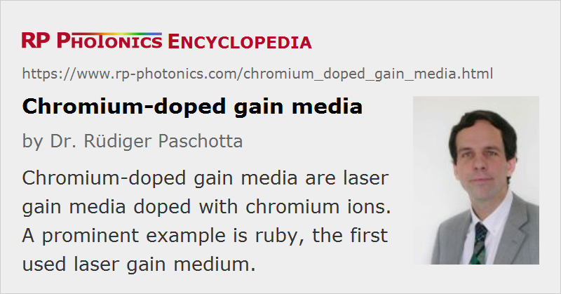

Chromium-doped Gain Media
Definition: laser gain media doped with chromium ions
More general term: solid-state gain media
German: Chrom-dotierte Verstärkermedien
Categories: optical materials, lasers
How to cite the article; suggest additional literature
Author: Dr. Rüdiger Paschotta
Chromium (chemical symbol: Cr) is a chemical element belonging to the group of transition metals. Chromium ions of different charge states are used as laser-active dopants of gain media:
- Cr2+ ions are mostly used in zinc chalcogenides such as Cr2+:ZnS, Cr2+:ZnSe, Cr2+:ZnSxSe1−x, and Cr2+:CdSe. Lasers based on these crystals can emit roughly between 1.9 and 3.5 μm and are typically pumped around 1.5–1.9 μm. Despite this huge emission bandwidth (for which such media are sometimes called “the Ti:sapphire of the infrared”), they can have reasonably low threshold pump powers and can be diode-pumped. It is possible to passively mode-lock such lasers for generating pulses with durations well below 100 fs [28].
- Cr3+ ions are the active ingredients of ruby (chromium-doped aluminum oxide), the laser medium of the first laser, and alexandrite (Cr3+:BeAl2O4), an early tunable solid-state laser medium. Cr3+ ions are now mostly used in gain media such as Cr3+:LiSrAlF6 (Cr:LiSAF), Cr3+:LiCaAlF6 (Cr:LiCAF) and Cr3+:LiSrGaF6 (Cr:LiSGAF), emitting around 0.8–0.9 μm. (Such crystals are called colquiriites.) Passively mode-locked lasers based on such media can be used for pulse durations down to roughly 10 fs. Compared with titanium–sapphire lasers, such lasers can be much cheaper, because they use a red rather than a green pump source and can be operated with low pump powers, so that diode pumping is feasible. However, the output powers achievable are lower (partly because of thermal quenching effects at higher temperatures), the wavelength tuning range is smaller, and the minimum pulse duration is larger. Some rather new materials are Cr3+:LiInGeO4 (Cr:LIGO), Cr3+:LiScGeO4, and Cr3+:LiInSiO4 (Cr:LISO) [21, 23, 25]. Here, Cr3+ ions emit in a surprisingly long wavelength range between about 1.2 and 1.6 μm (which is more typical for Cr4+) and with a very large bandwidth.
- Cr4+ ions occur in media such as Cr4+:YAG, Cr4+:MgSiO4 (forsterite) and other silicates, and also in germanates, apatites and other crystal types. The emission range is e.g. ≈ 1.35–1.65 μm for Cr4+:YAG and 1.1–1.37 μm for Cr4+:MgSiO4. Pulse durations below 20 fs have been achieved e.g. with Cr4+:MgSiO4. Nd:YAG lasers are often used for pumping such Cr4+ lasers.
Due to the strong electron–phonon interaction in such gain media, chromium-doped lasers are called vibronic lasers and have a large gain bandwidth.
Note that some chromium-doped crystals, in particular Cr4+:YAG, are also used as saturable absorbers in Q-switched lasers.
Suppliers
The RP Photonics Buyer's Guide contains 14 suppliers for chromium-doped gain media.
Questions and Comments from Users
Here you can submit questions and comments. As far as they get accepted by the author, they will appear above this paragraph together with the author’s answer. The author will decide on acceptance based on certain criteria. Essentially, the issue must be of sufficiently broad interest.
Please do not enter personal data here; we would otherwise delete it soon. (See also our privacy declaration.) If you wish to receive personal feedback or consultancy from the author, please contact him e.g. via e-mail.
By submitting the information, you give your consent to the potential publication of your inputs on our website according to our rules. (If you later retract your consent, we will delete those inputs.) As your inputs are first reviewed by the author, they may be published with some delay.
Bibliography
| [1] | T. H. Maiman, “Stimulated optical radiation in ruby”, Nature 187, 194 (1960), doi:10.1038/187493a0 |
| [2] | R. J. Collins et al., “Coherence, narrowing, directionality, and relaxation oscillations in the light emission from ruby”, Phys. Rev. Lett. 5 (7), 303 (1960), doi:10.1103/PhysRevLett.5.303 |
| [3] | D. Roess, “Analysis of room temperature CW ruby lasers”, IEEE J. Quantum Electron. 2 (4), 208 (1966), doi:10.1109/JQE.1966.1073937 |
| [4] | J. Walling et al., “Tunable CW alexandrite laser”, IEEE J. Quantum Electron. 16 (2), 120 (1980), doi:10.1109/JQE.1980.1070451 |
| [5] | J. Walling et al., “Tunable alexandrite lasers: Development and performance”, JSTQE 21 (10), 1568 (1985), doi:10.1109/JQE.1985.1072544 |
| [6] | V. Petrivevic et al., “Laser action in chromium-doped forsterite”, Appl. Phys. Lett. 52, 1040 (1988), doi:10.1063/1.99203 |
| [7] | S. A. Payne et al., “LiCaAlF6:Cr3+: a promising new solid-state laser material”, IEEE J. Quantum Electron. 24 (11), 2243 (1988), doi:10.1109/3.8567 |
| [8] | S. A. Payne et al., “Optical spectroscopy of the new laser materials, LiSrAlF6:Cr3+ and LiCaAlF6:Cr3+”, J. Lumin. 44, 167 (1989), doi:10.1016/0022-2313(89)90052-5 |
| [9] | R. Scheps, “Cr-doped solid-state lasers pumped by visible laser diodes”, Opt. Mater. 1, 1 (1992), doi:10.1016/0925-3467(92)90011-B |
| [10] | M. J. P. Dymott et al., “All-solid-state actively mode-locked Cr:LiSAF laser”, Opt. Lett. 19 (9), 634 (1994), doi:10.1364/OL.19.000634 |
| [11] | Cr. R. Pollock et al., “Cr4+ lasers: present performance and prospects for new host lattices”, IEEE Sel. Top. Quantum Electron. 1 (1), 62 (1995), doi:10.1109/2944.468370 |
| [12] | D. Kopf et al., “1.1-W cw Cr:LiSAF laser pumped by a 1-cm diode array”, Opt. Lett. 22 (2), 99 (1997), doi:10.1364/OL.22.000099 |
| [13] | R. H. Page et al., “Cr2+-doped zinc chalcogenides as efficient, widely tunable mid-infrared lasers”, IEEE J. Quantum Electron. 33 (4), 609 (1997), doi:10.1109/3.563390 |
| [14] | D. Kopf et al., “High-average-power diode-pumped femtosecond Cr:LiSAF lasers”, Appl. Phys. B 65, 235 (1997), doi:10.1007/s003400050269 |
| [15] | J. M. Hopkins et al., “Efficient, low-noise, SESAM-based femtosecond Cr3+:LiSrAlF6 laser”, Opt. Commun. 154, 54 (1998), doi:10.1016/S0030-4018(98)00312-5 |
| [16] | T. J. Carrig et al., “Mode-locked Cr2+:ZnSe laser”, Opt. Lett. 25 (3), 168 (2000), doi:10.1364/OL.25.000168 |
| [17] | D. J. Ripin et al., “Generation of 20-fs pulses by a prismless Cr4+:YAG laser”, Opt. Lett. 27 (1), 61 (2002), doi:10.1364/OL.27.000061 |
| [18] | P. Wagenblast et al., “Diode-pumped 10-fs Cr3+:LiCAF laser”, Opt. Lett. 28 (18), 1713 (2003), doi:10.1364/OL.28.001713 |
| [19] | A. Isemann and C. Fallnich, “High-power colquiriite lasers with high slope efficiencies pumped by broad-area laser diodes”, Opt. Express 11 (3), 259 (2003), doi:10.1364/OE.11.000259 |
| [20] | E. Sorokin et al., “Ultrabroadband infrared solid-state lasers”, JSTQE 11 (3), 690 (2005) (a review mainly concerning Cr2+ and Cr4+ lasers) |
| [21] | M. Sharonov et al., “Near-infrared laser operation of Cr3+ centers in chromium-doped LiInGeO4 and LiScGeO4 crystals”, Opt. Lett. 30 (8), 851 (2005), doi:10.1364/OL.30.000851 |
| [22] | U. Demirbas and A. Sennaroglu, “Intracavity-pumped Cr2+:ZnSe laser with ultrabroad tuning range between 1880 and 3100 nm”, Opt. Lett. 31 (15), 2293 (2006), doi:10.1364/OL.31.002293 |
| [23] | M. Sharonov et al., “Continuous tunable laser operation in both the 1.31 and 1.55 μm telecommunication windows in LiIn(Si/Ge)O4 olivines doped with trivalent chromium”, Opt. Lett. 32 (24), 3489 (2007), doi:10.1364/OL.32.003489 |
| [24] | S. B. Mirov et al., “Recent progress in transition-metal-doped II–VI mid-IR lasers”, JSTQE 13 (3), 810 (2007), doi:10.1109/JSTQE.2007.896634 |
| [25] | A. Fuerbach et al., “Direct diode-pumped laser operation of Cr3+- doped LiInGeO4 crystals”, Opt. Express 15 (24), 16097 (2007), doi:10.1364/OE.15.016097 |
| [26] | U. Demirbas et al., “Highly efficient, low-cost femtosecond Cr3+:LiCAF laser pumped by single-mode diodes”, Opt. Lett. 33 (6), 590 (2008), doi:10.1364/OL.33.000590 |
| [27] | S. Mirov et al., “Progress in Cr2+ and Fe2+ doped mid-IR laser materials”, Laser & Photon. Rev. 4 (1), 21 (2010), doi:10.1364/OME.1.000898 |
| [28] | N. Nagl et al., “Directly diode-pumped, Kerr-lens mode-locked, few-cycle Cr:ZnSe oscillator”, Opt. Express 27 (17), 24445 (20199), doi:10.1364/OE.27.024445 |
See also: gain media, transition-metal-doped gain media, ruby lasers, vibronic lasers, alexandrite lasers
and other articles in the categories optical materials, lasers
|  |
If you like this page, please share the link with your friends and colleagues, e.g. via social media: 


These sharing buttons are implemented in a privacy-friendly way! |
2020-03-23
Is Cr:YAG suitable for laser pulse amplification? I read several papers on Cr:forsterite as regenerative and multipass amplifiers but not even one on Cr:YAG.
Answer from the author:
Sure, it should be well suitable, even with a large amplification bandwidth – I cannot see why not. It is just not very efficient.